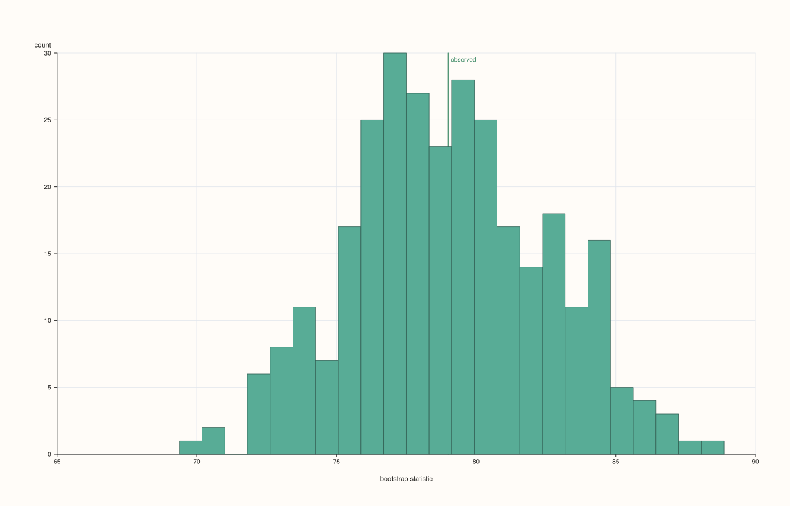
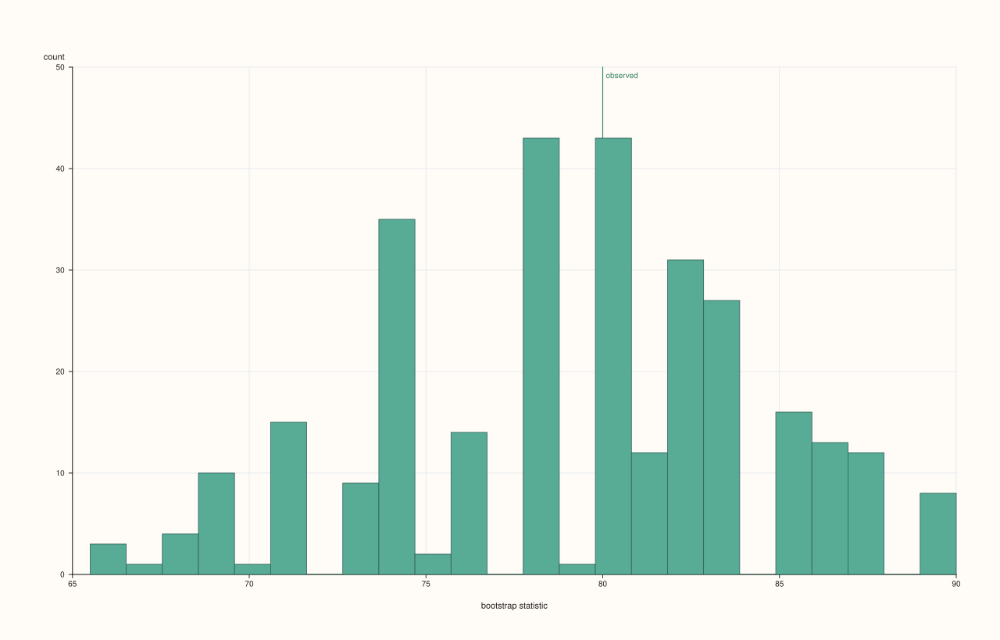
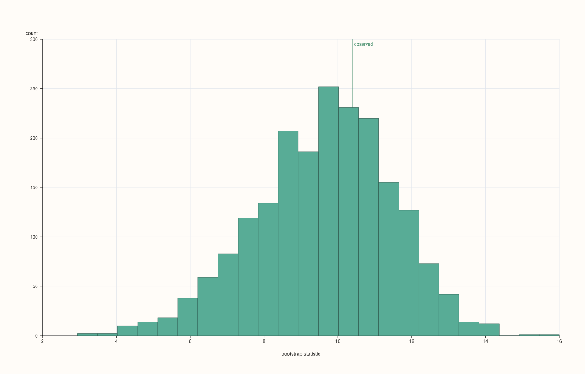
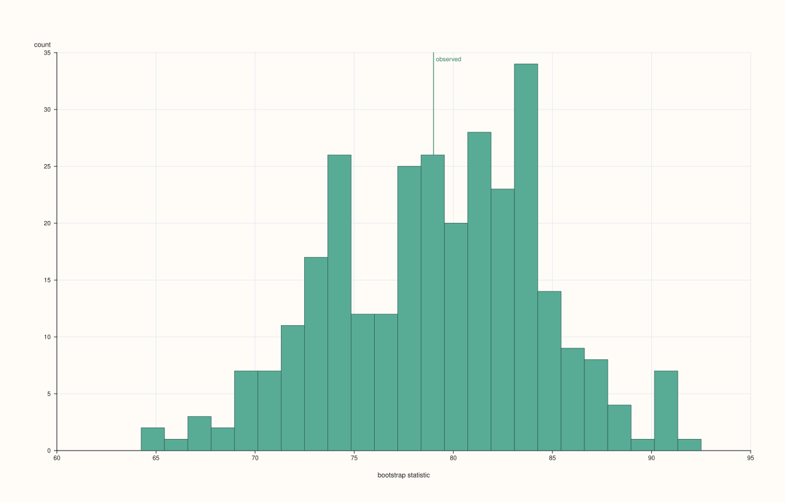
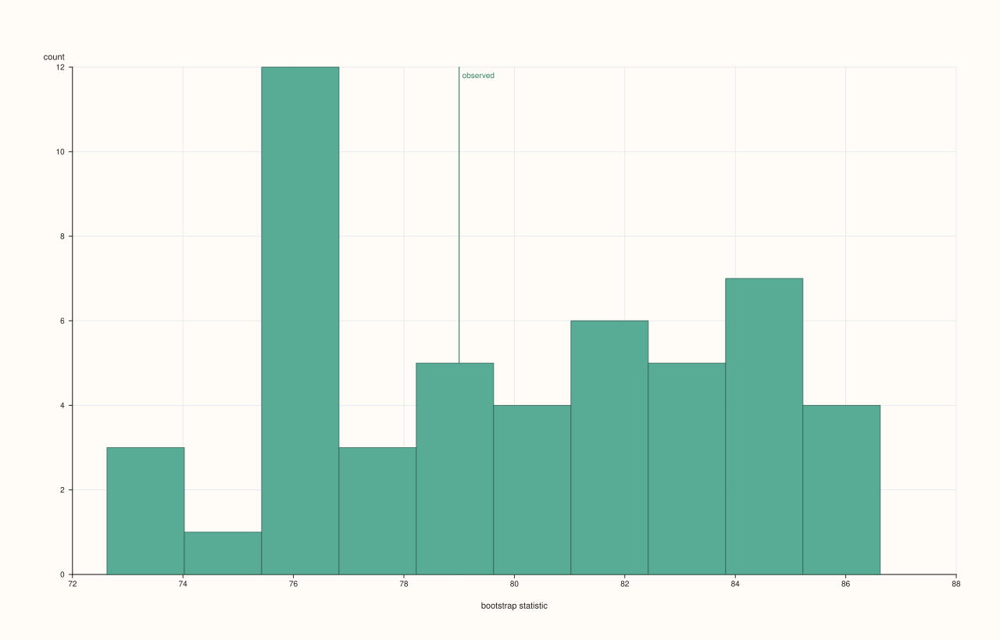

DataFramePlotAccessor::bootstrap¶
Back to DataFramePlotAccessor API Reference
Signature¶
DataFramePlotAccessor::bootstrap(
std::string_view feature,
const BootstrapPlotOptions& options = {}) const -> pluss::pl::Studio
What It Does¶
Draws a bootstrap sampling-distribution plot for one numeric feature: repeatedly resamples the feature’s values with replacement, computes a chosen summary statistic (mean, median, or standard deviation) on each resample, and histograms the resulting distribution of that statistic. A vertical reference line marks the statistic computed on the original, un-resampled data. This is a way to visualize how much a summary statistic would plausibly vary if the data collection were repeated, without assuming any particular parametric distribution.
Shares the single-feature resolution rule with act() and lag(): the
named feature must resolve to exactly one numeric (Series-kind) feature — see
act()’s callout for the exact throw text.
Note
At least two data points are required
A feature with fewer than two rows throws "flash::bootstrapplot requires at least two points".
Parameters¶
feature (std::string_view)
The single numeric feature to bootstrap. Must resolve to a Series-kind feature — see
act()’s shared-diagnostics note.
options (BootstrapPlotOptions)
```cpp
enum class BootstrapStatistic : std::uint8_t {
Mean,
Median,
Std,
};
struct BootstrapPlotOptions {
std::int64_t samples{300};
std::int64_t sample_size{0};
std::uint64_t seed{7};
int bins{24};
BootstrapStatistic statistic{BootstrapStatistic::Mean};
float trace_width{0.85F};
};
```
`samples` is how many resamples are drawn; clamped to a minimum of `8` internally.
`sample_size` is how many rows (with replacement) each resample draws — `0` (the
default) means "same size as the original feature," the conventional bootstrap setting;
a positive value overrides this. `seed` seeds the random draws deterministically — each
of the `samples` resamples uses `seed + i + 1` internally (`i` from `0` to
`samples - 1`), so the same `seed` reproduces the same sampling distribution across
runs. `statistic` chooses what's computed per resample: `Mean` (arithmetic mean),
`Median` (via a full sort and exact quantile at `0.5`), or `Std` (population standard
deviation, i.e. divided by `n` rather than `n - 1`). `bins` controls the histogram
resolution of the resulting distribution (floored to a minimum of `4`). `trace_width`
controls the histogram bars' outline width.
Returns¶
pluss::pl::Studio
A figure with one pane containing a histogram of the resampled statistic and a vertical
reference line at the statistic computed on the full, original data.
Examples¶
Example 1. Default options: bootstrap the mean, 300 resamples, same-size draws.
using namespace pluss::table;
auto scores = DataFrame({
{"score", Thread(pluss::make_series({71.0, 85.0, 90.0, 63.0, 78.0, 82.0, 95.0, 68.0}))},
});
auto chart = scores.plot().bootstrap("score");
chart.show();
300 resamples of 8 values each (drawn with replacement from the original 8), each resample’s mean computed and histogrammed into 24 bins (the default); the reference line marks the original data’s actual mean.

Example 2. Bootstrapping the median instead of the mean.
BootstrapPlotOptions options;
options.statistic = BootstrapStatistic::Median;
auto chart = scores.plot().bootstrap("score", options);
chart.show();

Example 3. Bootstrapping the standard deviation, with more resamples and a fixed seed for reproducibility.
BootstrapPlotOptions std_options;
std_options.statistic = BootstrapStatistic::Std;
std_options.samples = 2000;
std_options.seed = 42;
auto chart = scores.plot().bootstrap("score", std_options);
chart.save_pdf("score_bootstrap_std.pdf");
Running this call twice with seed = 42 produces the identical histogram both times, since
every resample’s random draw is deterministically derived from seed.

Example 4. An explicit sample_size smaller than the original data — each resample draws
fewer rows than the full feature has.
BootstrapPlotOptions small_draws;
small_draws.sample_size = 4;
auto chart = scores.plot().bootstrap("score", small_draws);
chart.show();
Each of the 300 resamples now draws only 4 values (with replacement) instead of 8, producing a wider sampling distribution than the same-size default would.

Example 5. Coarser histogram resolution and a fewer-samples run.
BootstrapPlotOptions coarse;
coarse.samples = 50;
coarse.bins = 10;
auto chart = scores.plot().bootstrap("score", coarse);

Example 6. Fewer than two rows throws.
auto single_row = DataFrame({
{"score", Thread(pluss::make_series({71.0}))},
});
try {
auto bad = single_row.plot().bootstrap("score");
} catch (const std::exception& e) {
std::cout << e.what();
}
Output¶
flash::bootstrapplot requires at least two points
Notes¶
featuremust resolve to exactly one numeric feature — seeact()’s shared note.samplesis floored to8;binsis floored to4.sample_size = 0(the default) means each resample matches the original row count.seedmakes the resampling fully deterministic and reproducible across runs.Stduses the population (÷ n) formula, not the sample (÷ n − 1) formula.Returns a
pluss::pl::Studio— seeline()’s important callout for how to view or save the result.
See Also¶
DataFramePlotAccessor::act/lag: the other two single-feature diagnostic plots on this accessor.DataFramePlotAccessor::hist: the general-purpose histogram this method specializes for a resampled statistic’s distribution.